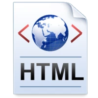

A World Wide Web (tradução em português: Rede Mundial de Computadores; em inglês: WWW, A Web) designa um sistema de documentos em hipermídia (ou hipermédia) que são interligados e executados na Internet.
As ideias por trás da Web podem ser identificadas ainda em 1980, no CERN (Organização Europeia para a Investigação Nuclear), quando Tim Berners-Lee construiu o ENQUIRE. Ainda que diferente da Web atual (2007), o projeto continha algumas das mesmas ideias primordiais, e também algumas ideias da Web semântica.
O conceito crucial do hipertexto originou-se em projetos da década de 1960, como o projeto Xanadu e o NLS. A ideia revolucionária de Tim foi unir o hipertexto e a Internet. Em seu livro Weaving The Web, ele explica que